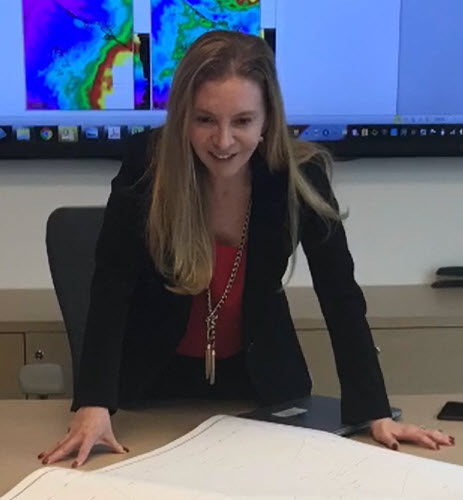
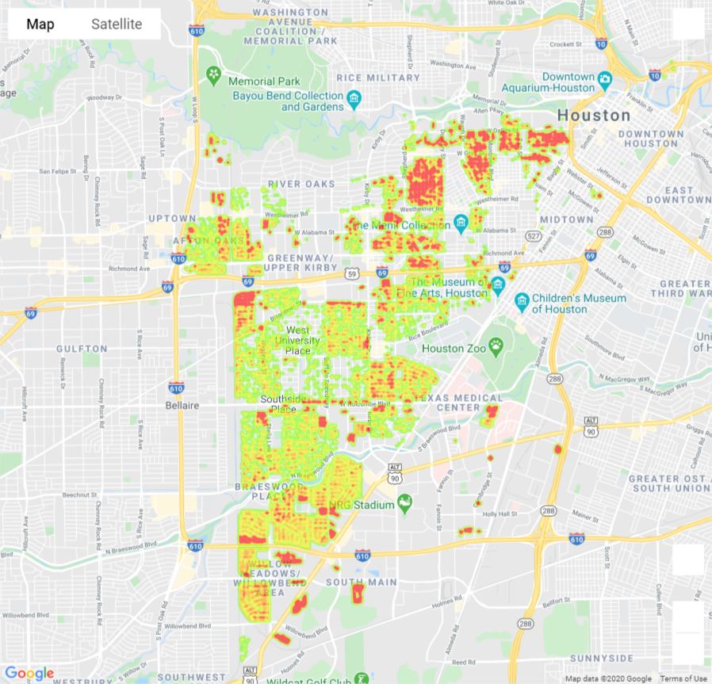
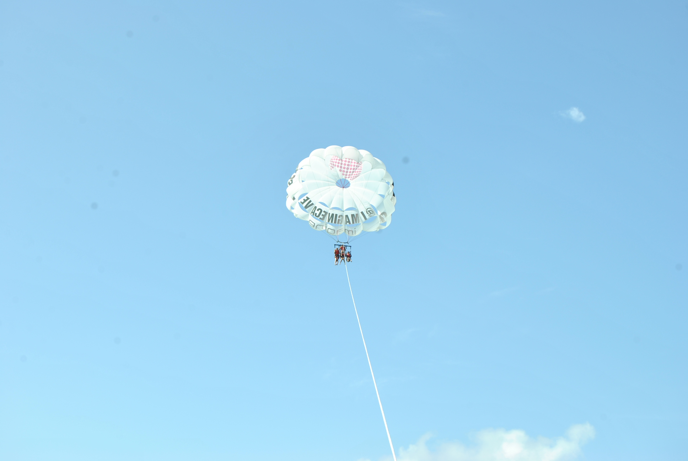

Adriana Ovalle, MSc
Sr. Technical Project & Product Development Leader
Specialize in Complex Projects and Portfolios, Delivering Innovative, State of The Art Products and Services

Profile
Career Profile
LinkedIn

GitHub Projects
Public Projects
GitHub

Travel Around the World
Awesome pictures
Travels